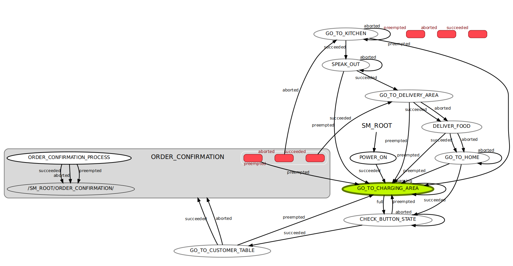

State Machine
In this video, I followed the tutorial from the book to construct a waiter robot state machine using ROS and Smach. The customers use the button to call the robot for ordering. After receiving the order, the waiter robot would ask the chief to confirm the order content. If the order is not confirmed, the robot would go to the kitchen and use the speaker to ask the chief for confirmation. After the order is confirmed, the robot will deliver the meal. The original code is not complete: it lacks an actionlib server. I wrote the server part on my own and combined the battery server from another example. The robot now keeps monitoring its own remaining power, and if the power is below 50%, it will preempt its action and head back to the charging area till the battery is full.
